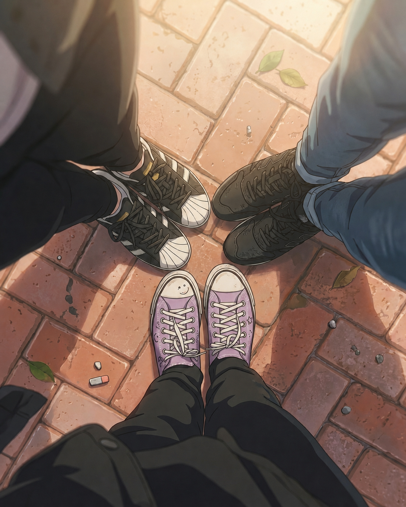

Hoje foi um dia completamente normal. O que, na minha escola, já deveria ter me deixado desconfiada.
Perdi cinco minutos procurando um tênis que estava no meu pé, quase entreguei a atividade de História na aula de Ciências e ouvi de Bia e Caio que isso é “muito a minha cara”.
Amigos são pessoas que conhecem todos os nossos defeitos e fazem questão de organizar tudo em listas. Não sei para que preciso deles.
Ou talvez eu deva repensar minhas amizades.
Enfim. Um dia normal.

No intervalo, nós ocupamos nosso lugar de sempre: o pedaço de muro atrás da quadra que não tem uma placa dizendo “não sentar”, embora todo professor aja como se tivesse.
Caio tentou me convencer de que a cantina tinha diminuído o pão de queijo. Bia disse que talvez nossas mãos tivessem crescido. Foram nove minutos de debate. Nenhuma conclusão. A filosofia começou assim, provavelmente.
Quando o sinal tocou, eu fui a última a levantar. Foi aí que vi a marca.
Bem ao lado do meu tênis, duas curvas formavam olhos. Em cima, havia duas pontas pequenas. Parecia uma coruja.
Não uma coruja muito bem desenhada. Mais uma coruja feita por alguém com pressa. Ou por uma mancha de umidade com pretensões artísticas.
Pisquei.
Quando olhei de novo, era só uma marca escura no cimento.
Chamei Bia e Caio. Eles olharam para o chão, olharam para mim e, sem combinar, fizeram exatamente a mesma cara. A cara que significa: Sofia, talvez você precise dormir mais.
Não preciso. Dormi quase sete horas ontem. Seis e meia também conta como quase sete.
Provavelmente era sujeira.
Provavelmente.
P.S. que eu quase apaguei
Na saída, olhei para trás. A marca tinha sumido.
No lugar dela havia uma pena cinza.